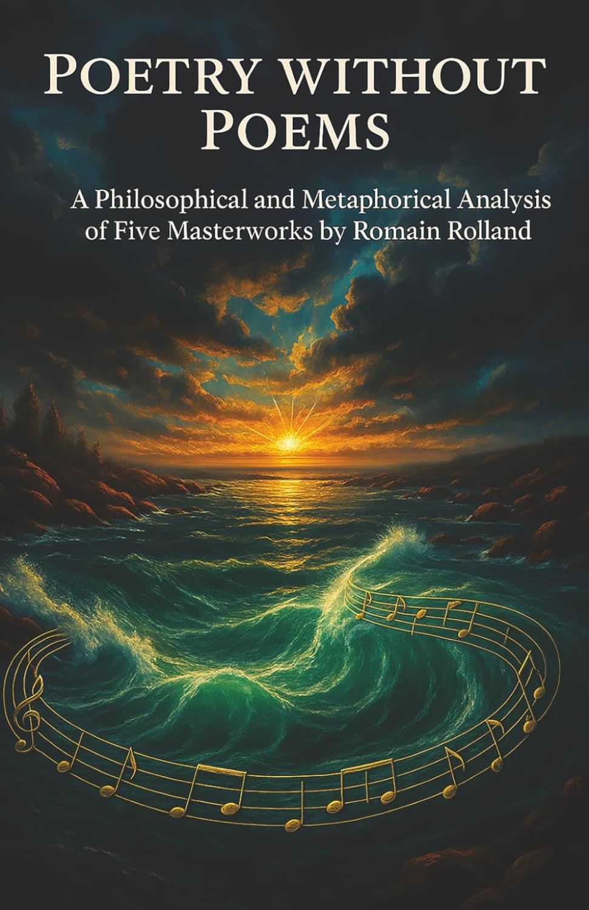

Romain Rolland’s humanism, reframed for modern readers.

Summary
Poetry Without Poems traces Romain Rolland’s search for a courageous humanism—across art,
philosophy, and political conscience. It follows his encounter with Gandhi, the convictions that carried him
“above the battle,” and the lasting echo of his ideas in a fractured world.
The book is designed for close reading and conversation: short, lucid chapters, context for newcomers, and clear
pointers for deeper study. It’s ideal for seminars, reading groups, and lifelong learners.
Themes & Topics
Conscience “above the battle” — moral independence in times of war
Secular heroism — saints in art: Beethoven, Michelangelo, and creative courage
Jean-Christophe — culture as a bridge beyond nationalism
Rolland & Gandhi — the dialogue that sharpened nonviolent ethics
The “eternal echo” — how ideas travel across languages and generations
Join the discussion
Share questions, favorite passages, and insights with the community.